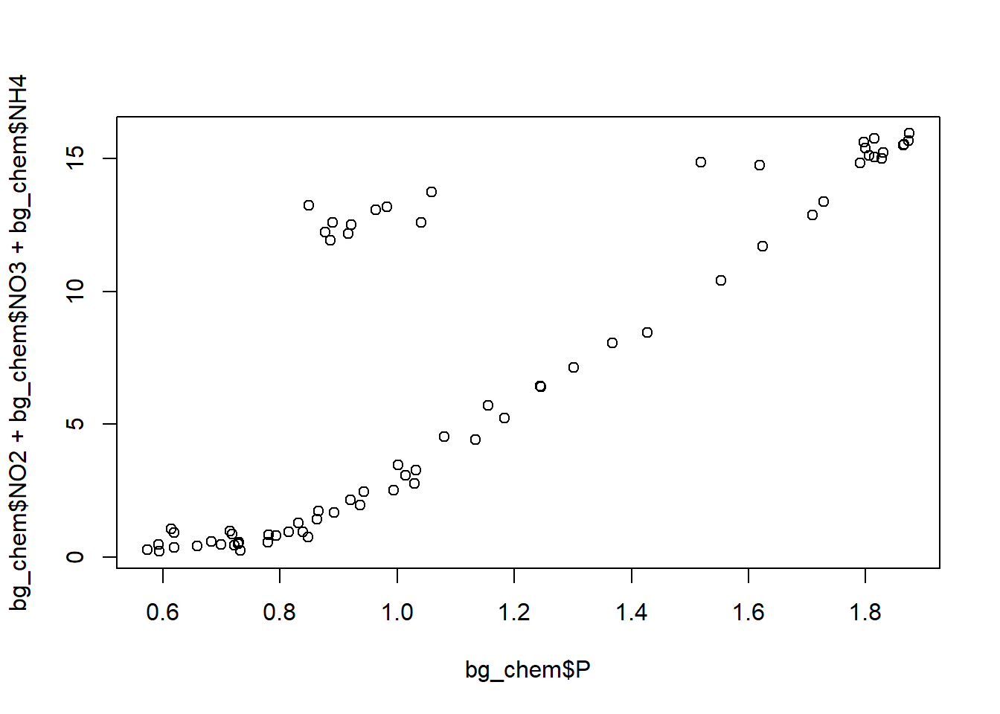

library(readr) # I can still use comments
library(here)here() starts at C:/Users/tmhoe/Documents/Working Phd Projects/training_hoevetA Quarto document is a newer version of R Markdown
It allows for text and code in the same script.
It is similar to Jupyter Notebook by using cell blocks for code.
Open manuscript_1_demo project
File Dropdown -> Quarto Document
This quarto doc will be for data preparation for whatever manuscript 1 is.
There are 2 viewing modes, source and visual. Visual works similar to word and source works more like r.
Save Quarto Doc as data_preparation in scripts folder
Just like you may do in R, you can set up your plan for operations.
Here you can use headings, then insert code
Notice the outline feature on the right panel.
Now, you can go and run your code and write text as necessary
ctl + alt + i inserts a new block of code
library(readr) # I can still use comments
library(here)here() starts at C:/Users/tmhoe/Documents/Working Phd Projects/training_hoevetbg_chem <- read_csv(here('data', 'BGchem2008data.csv'))
#here will start at the project directory and then go into the folder structure we created and coral_data.csv is right where we told it#|eval: false #will include code but not results
#|echo: false #will not show code in final
### print the column names
colnames(bg_chem) [1] "Date" "Time" "Station" "Latitude"
[5] "Longitude" "Target_Depth" "CTD_Depth" "CTD_Salinity"
[9] "CTD_Temperature" "Bottle_Salinity" "d18O" "Ba"
[13] "Si" "NO3" "NO2" "NH4"
[17] "P" "TA" "O2" ### get the general structure
str(bg_chem)spc_tbl_ [70 × 19] (S3: spec_tbl_df/tbl_df/tbl/data.frame)
$ Date : Date[1:70], format: "2008-03-21" "2008-03-21" ...
$ Time : POSIXct[1:70], format: "1899-12-31 21:56:46" "1899-12-31 21:56:46" ...
$ Station : chr [1:70] "73N,140W" "73N,140W" "73N,140W" "73N,140W" ...
$ Latitude : num [1:70] 73 73 73 73 73 ...
$ Longitude : num [1:70] -140 -140 -140 -140 -140 ...
$ Target_Depth : num [1:70] 20 60 85 190 310 20 60 85 190 310 ...
$ CTD_Depth : num [1:70] 15.1 60.6 85.7 191.4 309.3 ...
$ CTD_Salinity : num [1:70] 26.1 29.2 31.4 33.1 34.6 ...
$ CTD_Temperature: num [1:70] -1.423 -0.934 -0.146 -1.478 0.258 ...
$ Bottle_Salinity: num [1:70] 26.1 29.2 31.4 33.1 34.6 ...
$ d18O : num [1:70] -3.5318 -3.1857 -2.1087 -1.4293 0.0847 ...
$ Ba : num [1:70] 72.4 82.8 60.6 76.1 -99 ...
$ Si : num [1:70] 2.46 2.82 7.54 36.58 8.06 ...
$ NO3 : num [1:70] -0.0311 0.026 2.6964 15.8538 12.1601 ...
$ NO2 : num [1:70] 0.0562 0.1726 0.0217 0.0246 -0.0013 ...
$ NH4 : num [1:70] 0.1974 0.0558 0.0691 0.0591 0.0653 ...
$ P : num [1:70] 0.593 0.732 1.03 1.875 0.877 ...
$ TA : num [1:70] 1895 2094 2194 2268 2296 ...
$ O2 : num [1:70] 9.25 -99 -99 -99 6.66 ...
- attr(*, "spec")=
.. cols(
.. Date = col_date(format = ""),
.. Time = col_datetime(format = ""),
.. Station = col_character(),
.. Latitude = col_double(),
.. Longitude = col_double(),
.. Target_Depth = col_double(),
.. CTD_Depth = col_double(),
.. CTD_Salinity = col_double(),
.. CTD_Temperature = col_double(),
.. Bottle_Salinity = col_double(),
.. d18O = col_double(),
.. Ba = col_double(),
.. Si = col_double(),
.. NO3 = col_double(),
.. NO2 = col_double(),
.. NH4 = col_double(),
.. P = col_double(),
.. TA = col_double(),
.. O2 = col_double()
.. )
- attr(*, "problems")=<externalptr> ### First twenty lines
head(bg_chem, 20)# A tibble: 20 × 19
Date Time Station Latitude Longitude Target_Depth
<date> <dttm> <chr> <dbl> <dbl> <dbl>
1 2008-03-21 1899-12-31 21:56:46 73N,140W 73.0 -140. 20
2 2008-03-21 1899-12-31 21:56:46 73N,140W 73.0 -140. 60
3 2008-03-21 1899-12-31 21:56:46 73N,140W 73.0 -140. 85
4 2008-03-21 1899-12-31 21:56:46 73N,140W 73.0 -140. 190
5 2008-03-21 1899-12-31 21:56:46 73N,140W 73.0 -140. 310
6 2008-03-22 1899-12-31 21:45:27 72N,140W 72.1 -140. 20
7 2008-03-22 1899-12-31 21:45:27 72N,140W 72.1 -140. 60
8 2008-03-22 1899-12-31 21:45:27 72N,140W 72.1 -140. 85
9 2008-03-22 1899-12-31 21:45:27 72N,140W 72.1 -140. 190
10 2008-03-22 1899-12-31 21:45:27 72N,140W 72.1 -140. 310
11 2008-03-22 1899-12-31 21:45:27 72N,140W 72.1 -140. 430
12 2008-03-22 1899-12-31 01:36:12 72_40N,145W 72.7 -145. 20
13 2008-03-22 1899-12-31 01:36:12 72_40N,145W 72.7 -145. 60
14 2008-03-22 1899-12-31 01:36:12 72_40N,145W 72.7 -145. 85
15 2008-03-22 1899-12-31 01:36:12 72_40N,145W 72.7 -145. 190
16 2008-03-22 1899-12-31 01:36:12 72_40N,145W 72.7 -145. 310
17 2008-03-23 1899-12-31 20:54:32 73_40N,136W 73.6 -137. 20
18 2008-03-23 1899-12-31 20:54:32 73_40N,136W 73.6 -137. 60
19 2008-03-23 1899-12-31 20:54:32 73_40N,136W 73.6 -137. 85
20 2008-03-23 1899-12-31 20:54:32 73_40N,136W 73.6 -137. 190
# ℹ 13 more variables: CTD_Depth <dbl>, CTD_Salinity <dbl>,
# CTD_Temperature <dbl>, Bottle_Salinity <dbl>, d18O <dbl>, Ba <dbl>,
# Si <dbl>, NO3 <dbl>, NO2 <dbl>, NH4 <dbl>, P <dbl>, TA <dbl>, O2 <dbl>### Get a summary of all of the columns
summary(bg_chem) Date Time Station
Min. :2008-03-21 Min. :1899-12-31 00:19:50.00 Length:70
1st Qu.:2008-03-23 1st Qu.:1899-12-31 20:20:40.00 Class :character
Median :2008-03-26 Median :1899-12-31 20:52:24.00 Mode :character
Mean :2008-03-25 Mean :1899-12-31 17:52:13.01
3rd Qu.:2008-03-28 3rd Qu.:1899-12-31 22:43:57.25
Max. :2008-03-30 Max. :1899-12-31 23:50:29.00
Latitude Longitude Target_Depth CTD_Depth
Min. :72.05 Min. :-163.7 Min. : 20.0 Min. : 15.13
1st Qu.:72.97 1st Qu.:-153.3 1st Qu.: 60.0 1st Qu.: 60.34
Median :74.05 Median :-149.8 Median : 85.0 Median : 85.78
Mean :74.04 Mean :-148.1 Mean :123.8 Mean :125.42
3rd Qu.:75.26 3rd Qu.:-140.3 3rd Qu.:190.0 3rd Qu.:192.66
Max. :76.32 Max. :-136.5 Max. :430.0 Max. :442.17
CTD_Salinity CTD_Temperature Bottle_Salinity d18O
Min. :25.50 Min. :-1.6843 Min. :25.50 Min. :-3.7310
1st Qu.:30.17 1st Qu.:-1.4906 1st Qu.:30.17 1st Qu.:-2.9615
Median :31.65 Median :-1.2600 Median :31.65 Median :-2.0444
Mean :31.45 Mean :-0.9647 Mean :31.45 Mean :-2.0166
3rd Qu.:33.08 3rd Qu.:-0.4777 3rd Qu.:33.08 3rd Qu.:-1.4939
Max. :34.82 Max. : 0.7008 Max. :34.82 Max. : 0.2073
Ba Si NO3 NO2
Min. :-99.00 Min. : 2.460 Min. :-0.0499 Min. :-0.00130
1st Qu.: 64.08 1st Qu.: 3.915 1st Qu.: 0.7849 1st Qu.: 0.01285
Median : 69.68 Median : 8.424 Median : 4.7488 Median : 0.02475
Mean : 60.95 Mean :13.292 Mean : 6.8571 Mean : 0.04766
3rd Qu.: 72.25 3rd Qu.:20.985 3rd Qu.:13.0425 3rd Qu.: 0.04469
Max. : 86.09 Max. :36.577 Max. :15.8538 Max. : 0.27300
NH4 P TA O2
Min. :0.00535 Min. :0.5732 Min. : -99 Min. :-99.000
1st Qu.:0.01603 1st Qu.:0.7986 1st Qu.:2136 1st Qu.:-99.000
Median :0.03465 Median :0.9725 Median :2203 Median :-99.000
Mean :0.05853 Mean :1.1201 Mean :2089 Mean :-73.059
3rd Qu.:0.06747 3rd Qu.:1.4956 3rd Qu.:2271 3rd Qu.:-99.000
Max. :0.37390 Max. :1.8745 Max. :2312 Max. : 9.246 ### Unique values of a column
unique(bg_chem$Date)[1] "2008-03-21" "2008-03-22" "2008-03-23" "2008-03-24" "2008-03-25"
[6] "2008-03-26" "2008-03-27" "2008-03-29" "2008-03-30"# Shift command c creates a comment via shortcut. nitrate <- mean(bg_chem$NO3)
nitrite <- mean(bg_chem$NO2)
amm <- mean(bg_chem$NH4)
phos <- mean(bg_chem$P)ratio <- (nitrate + nitrite + amm) / phosThe Redfield ratio for this dataset is ~ r round(ratio).
Here i can use my object to display in the rendered html.
\[ Redfield = \frac{Nitrogen}{Phosphorus} \] Using $$, I can type to create a formula visual.

What does the script look like in the visual viewer?
Clearing the environment and rendering after you’re finished is a good check for reproducibility because it won’t render if the code doesn’t run from scratch.
When we created the Quarto doc, we selected html. There is also PDF and Word.
so when you render the document, it will render to whatever format it was created at.
This will generate a html from my .qmd file.